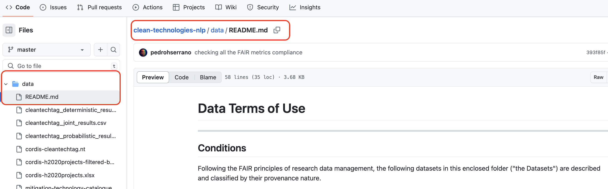
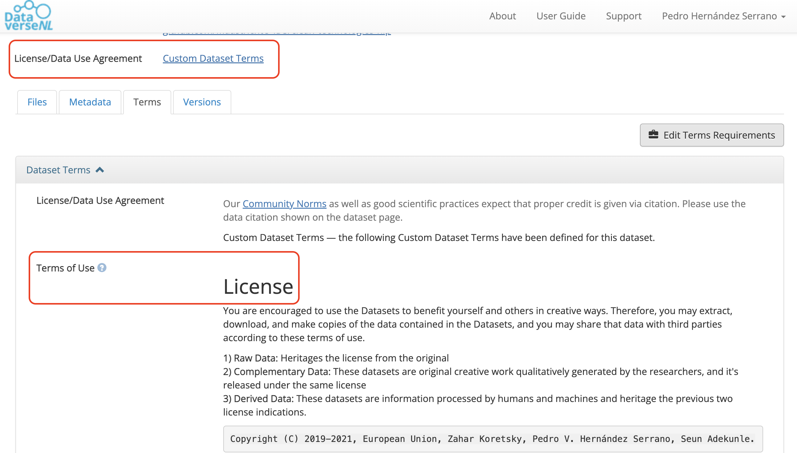
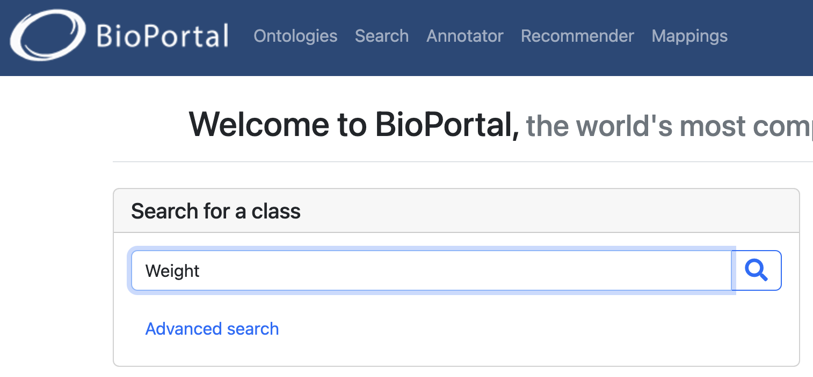
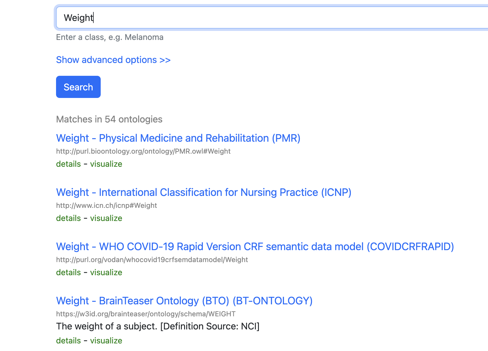
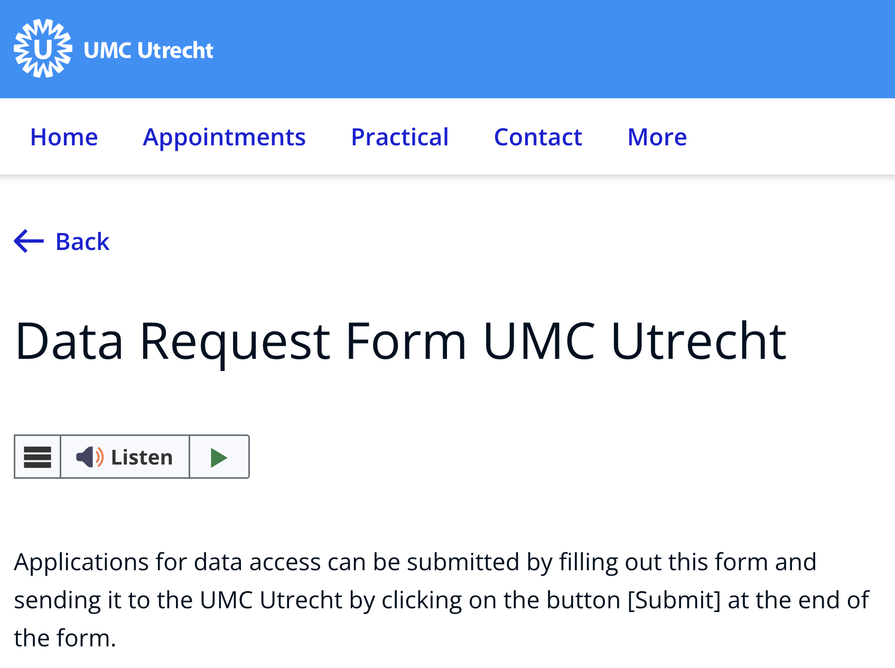
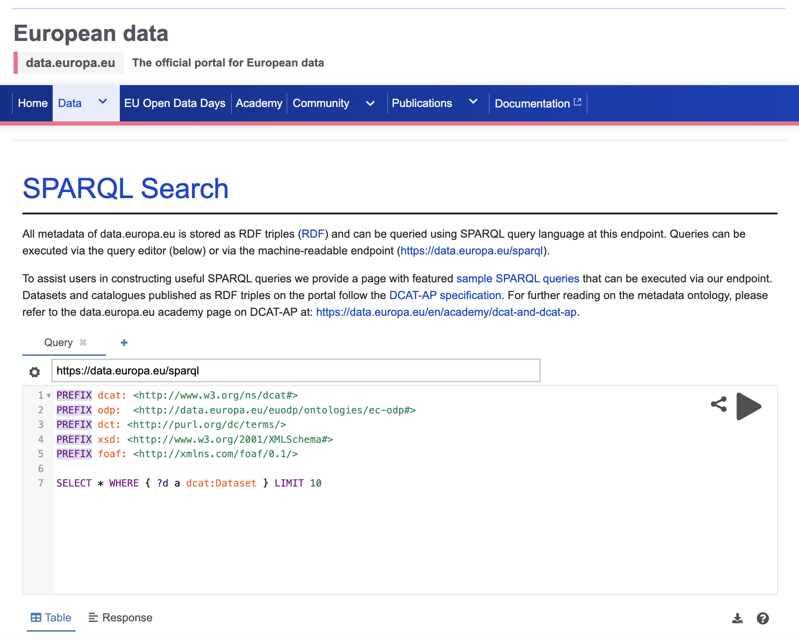
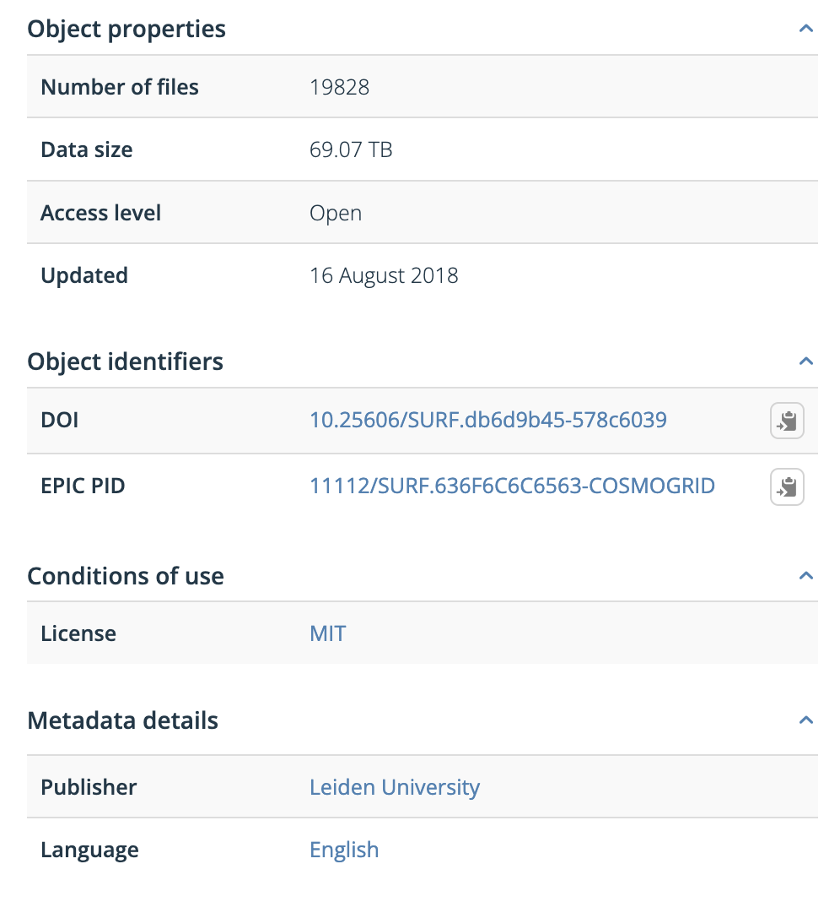
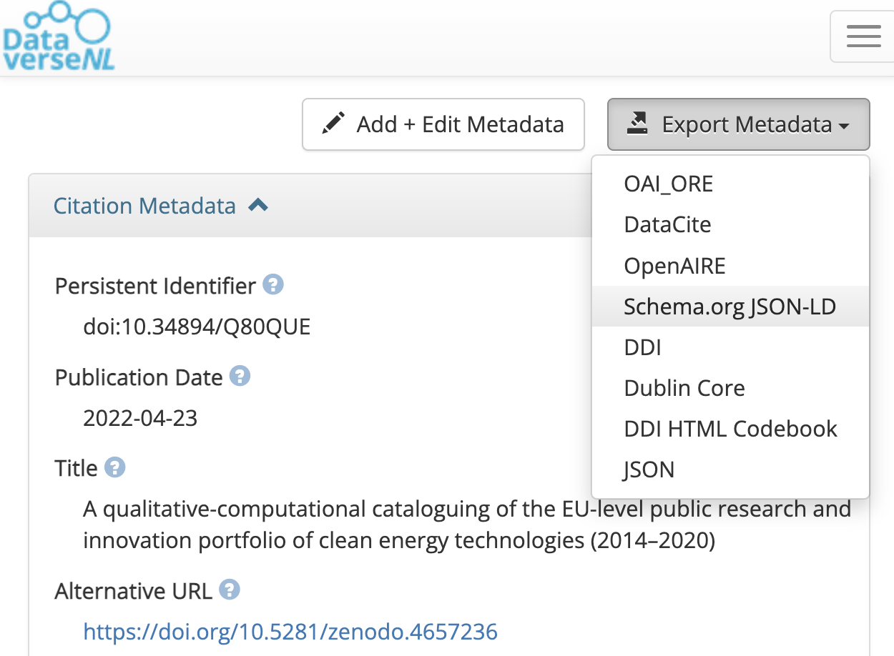
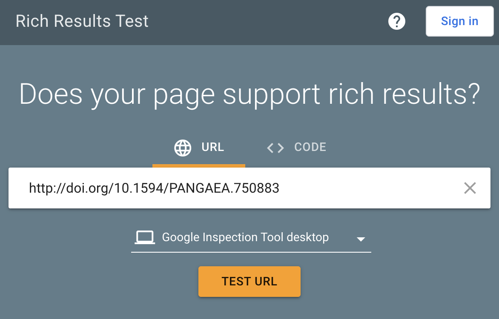
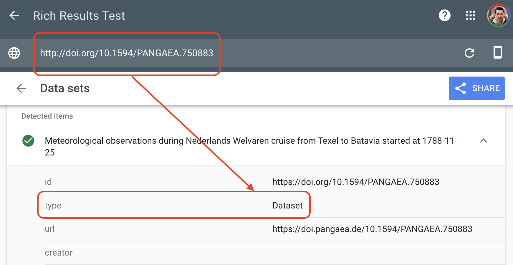

Content from Introduction
Last updated on 2026-04-14 | Edit this page
Estimated time: 15 minutes
Overview
Questions
- Does FAIR data mean open data?
- What are digital objects and persistent identifiers?
- What kinds of persistent identifiers are commonly used?
Objectives
- Understand that FAIR does not simply mean open.
- Explain the difference between human-readable and machine-friendly digital objects.
- Recognize DOI as one type of PID used to identify digital objects.
Does FAIR data mean open data?
FAIR is not identical to open
FAIR means that data and related research objects are designed to be easy for humans and machines to find, understand, access, and reuse. Some FAIR data can also be open, but openness and FAIRness are not the same thing.

Human-readable vs machine-friendly
Human-readable content is easy for a person to inspect directly, but that does not guarantee that software can parse and reuse it automatically. Machine readable content uses explicit structure, such as CSV, JSON, or XML, so a computer can interpret relationships and values without guessing.
During this lesson, “machine-friendly” is used broadly to mean material that is machine-readable and also supports further automated action and interoperability.

What are digital objects and persistent identifiers?
A digital object is a sequence of bits stored in digital memory that has informational value on its own. Examples include:
- a scientific publication
- a dataset
- a rich metadata record
- a README file describing access and reuse conditions
A persistent identifier, or PID, is a durable reference to a digital or physical resource. PIDs are backed by technical infrastructure and governance arrangements that help them continue resolving even when the resource itself changes location.
Common uses of PIDs include identifying:
- articles, datasets, and software
- researchers
- organizations and funders
- projects and instruments
- physical samples and media objects
DOI is one well-known PID type and is commonly used for datasets and publications. ORCID is another example, focused on researcher identity.
For a short explainer, see the FREYA project video on the importance of PIDs.
Exercise
Visit the recent machine learning submissions on arXiv.
Pick a paper, open its PDF, and search for http or
doi.
What kinds of links do the authors use for data or software references, and why is a DOI usually more robust than a personal website or repository link alone?
Authors often link to GitHub repositories, project pages, or other web pages for software and data. Those locations may move or disappear over time. A DOI is more robust because it resolves through persistent infrastructure and points to current metadata about the object even if the storage location changes.
Reflection
How does your discipline usually share data? Is there a data journal, domain repository, or another community-specific mechanism for making research outputs findable and reusable?
- FAIR means making research objects more usable by humans and machines, not automatically making them open.
- Machine-friendly objects are structured so software can interpret and reuse them reliably.
- Digital objects include datasets, publications, metadata records, and related documentation.
- DOI is a common PID used for datasets and publications.
Content from Set up your own terms
Last updated on 2026-04-14 | Edit this page
Estimated time: 25 minutes
Overview
Questions
- What are data terms of use?
- What should a data terms of use statement contain?
- What format should terms of use use?
- What standard licenses are available for data?
Objectives
- Understand what data terms of use are and why they matter.
- Identify the minimum components of a basic terms of use statement.
- Recognize when a standard license is sufficient and when a custom agreement is needed.
FAIR principles used in data terms of use
Accessible:
- FM-A2 Metadata Longevity: https://doi.org/10.25504/FAIRsharing.A2W4nz
Reusable:
- FM-R1.1 Accessible Usage License: https://doi.org/10.25504/FAIRsharing.fsB7NK
What are data terms of use?
Data terms of use are a textual statement that sets out the rules, conditions, licenses, and legal considerations that govern reuse of a data source.

Examples:
- World Bank terms of use for datasets: https://www.worldbank.org/en/about/legal/terms-of-use-for-datasets
- Numbeo terms of use: https://www.numbeo.com/common/terms_of_use.jsp

These examples show that terms of use usually describe the resource, the conditions under which it may be reused, and any expectations around attribution or restrictions.
What must a terms of use statement contain?
As a minimum, a data terms of use statement should cover the following elements:
| Section | Description | Example |
|---|---|---|
| Description | What the statement refers to and which digital objects it covers | “These terms apply to the Happy Dataset.” |
| License | Under which conditions reuse is allowed | “The Happy Dataset is in the public domain.” |
| Attribution | How the data should be cited or acknowledged | “Please cite the Happy Dataset.” |
| Disclaimer | Important limitations or caveats | “The last 100 records may contain selection bias.” |
Depending on the context, the statement may need additional clauses for multiple databases, sensitive data, embargoes, or obligations coming from a larger funded project.
Terms of use are part of the legal basis for reuse
The terms of use statement is the formal basis on which others may access and reuse a data source. If your work sits inside a larger project or policy framework, check whether terms already exist before drafting a new statement.
An example of a broader policy framework is the FAIRsharing record for the 1958 Birth Cohort policy:
- FAIRsharing entry: https://fairsharing.org/FAIRsharing.z09fg9
- Original policy document: https://cpb-eu-w2.wpmucdn.com/blogs.bristol.ac.uk/dist/7/314/files/2015/07/POLICY-DOCUMENT-FINAL-Vsn-4.0-DEC-2014.pdf
What format should terms of use use?
Terms of use should be stored as plain text in a machine-friendly
format such as .txt, .md, or
.html. The exact length and level of detail will vary by
project, but the statement should be easy for people to read and for
systems to preserve.
Keep the statement in an accessible text format
You can draft terms of use in almost any editor, but the final version should be stored in a format that does not depend on proprietary software to read it.
Many projects place the statement in a README,
LICENSE, or similar documentation file.
Exercise
Visit the City of Philadelphia terms-of-use file:
https://github.com/CityOfPhiladelphia/terms-of-use/blob/master/LICENSE.md
Answer the following:
- What kind of resource is it about?
- In what format is the statement written?
- On which platform is it published?
- It is a terms-of-use style statement published for city-maintained digital resources.
- The file format is Markdown (
.md). - It is published on GitHub.
The statement itself often lives next to the data documentation:

Some repositories let you define tailored reuse conditions directly on the platform. Dataverse, for example, defaults to a CC0 waiver but also allows custom terms after dataset creation.

Exercise
Is it possible to edit terms of use in DataverseNL?
Check the DataverseNL documentation or FAQ and find the answer.
Yes. After creating a dataset, you can go to the Terms tab, choose not to apply CC0, and provide your own terms and conditions.
Useful reference:
- Sample Data Usage Agreement: https://dataverse.org/best-practices/sample-dua
Are there standard licenses we can pick from?
Two commonly used licensing families for data are:
- Creative Commons: https://creativecommons.org/about/cclicenses/
- Open Data Commons: https://opendatacommons.org/licenses/index.html
Creative Commons licenses are easy to understand and widely recognized, even if they were not designed only for data. Open Data Commons licenses are more explicitly data-oriented.
| Mark | Meaning |
|---|---|
| BY | Creator must be credited |
| SA | Derivatives or redistributions must use the same license |
| NC | Only non-commercial uses are allowed |
| ND | No derivatives are allowed |
Exercise
Choose a Creative Commons license for simulation data under these conditions:
- others cannot modify the work
- commercial reuse is allowed
Which license fits?
Attribution-NoDerivatives 4.0 International, or CC BY-ND 4.0.
Scenario
You are collaborating on a study of quality of life in children and plan to collect potentially sensitive information about bullying, social media, and family structure.
What should be considered when drafting terms of use for this study? Should the statement be drafted only by the researchers, or should legal and governance support be involved?
- A data terms of use statement defines the legal and practical basis for reuse.
- A license is the minimum requirement, but some projects need richer terms or a custom agreement.
- Store terms of use in an accessible text format such as
.mdor.txt. - If a standard license does not fit the project, a tailored terms-of-use statement or usage agreement may be necessary.
Content from Speak the same language
Last updated on 2026-04-14 | Edit this page
Estimated time: 25 minutes
Overview
Questions
- What are data descriptions?
- How can data descriptions be reused?
- Are there standard ways to create them?
- What is the relationship between data descriptions and linked data?
Objectives
- Recognize that different communities use different names for data descriptions.
- Learn how to build machine-friendly data description files.
- Understand why reusing ontology terms improves interoperability.
FAIR principles used in data descriptions
Interoperable:
- FM-I1 Use a Knowledge Representation Language: https://doi.org/10.25504/FAIRsharing.jLpL6i
- FM-I2 Use FAIR Vocabularies: https://doi.org/10.25504/FAIRsharing.0A9kNV
Reusable:
- FM-R1.3 Meets Community Standards: https://doi.org/10.25504/FAIRsharing.cuyPH9
What are data descriptions?
Data descriptions document the meaning of each data attribute or variable in a dataset.
Depending on the discipline, similar documents may be called:
- codebooks
- data dictionaries
- labels or data tags
- data glossaries
Example:
| Variable name | Description | Scale |
|---|---|---|
| Weight | Weight of a human | kilograms |
| Height | Height of a human | centimetres |
| Age | Age of a human | years |
| Blood glucose level | Blood glucose level of a human | mg/dl |
Different fields use different names
No matter what the document is called, the goal is the same: describe what the dataset variables mean so others can interpret and reuse the data correctly.
How can data descriptions be reused?
Writing documentation takes time, so when possible you should reuse accepted community definitions instead of inventing a new description every time.
BioPortal is a good example of a registry where community-maintained ontology terms can be searched and reused:
- BioPortal: https://bioportal.bioontology.org/



Reuse ontology terms when possible
Advantages:
- you do not need to redefine common concepts repeatedly
- you gain a persistent identifier for the concept
- other systems can align variables across datasets more easily
Disadvantages:
- sometimes no existing ontology fits the exact concept you need
Are there standard ways to create data descriptions?
There is no single universal format, but the minimum useful description usually includes:
- the variable name
- a definition
- ideally, a link to the reused ontology term or community definition
Some general-purpose vocabularies and metadata schemas include:
| Resource | Link | Use |
|---|---|---|
| Schema.org | https://schema.org/ | Generic web concepts |
| DBpedia | https://www.dbpedia.org/resources/lookup/ | Concepts derived from Wikipedia |
| DCAT | https://www.w3.org/TR/vocab-dcat-2/ | Data catalog concepts |
| Dublin Core | https://www.dublincore.org/specifications/dublin-core/dcmi-terms/ | General metadata terms |
Public registries that help locate vocabularies include:
- Linked Open Vocabularies: https://lov.linkeddata.es/dataset/lov/
- EU Vocabularies: https://op.europa.eu/en/web/eu-vocabularies
- BioPortal: https://bioportal.bioontology.org/
- AgroPortal: https://agroportal.lirmm.fr/
- EcoPortal: https://ecoportal.lifewatchitaly.eu/
- Ontology Lookup Service: https://www.ebi.ac.uk/ols/index
- Bioschemas: https://bioschemas.org/
Exercise
Visit BioPortal and search for a term describing
blood glucose level.
What ontology term would you reuse, and what persistent identifier does it provide?
There is more than one possible match, but a valid answer is to identify a term such as the clinical measurement concept and record its ontology URI or other persistent identifier provided by the registry.
Data descriptions are often maintained as tables in
.csv, .xlsx, or similar formats. For
databases, it is also useful to provide both a machine-readable schema
and a human-readable diagram.

Other human-friendly approaches include dataset nutrition labels and automated codebook tools, but the FAIR principles push further toward structured, machine-actionable formats.
What is the relationship between data descriptions and linked data?
When data descriptions reuse ontology terms and stable identifiers, datasets can be transformed into linked data formats such as RDF and become easier to combine with other resources.
Tools that can help with this include:
| Tool | Source | GUI | Note |
|---|---|---|---|
| OpenRefine | https://openrefine.org/ | Yes | Flexible but can be heavy to install |
| RMLMapper | https://github.com/RMLio/rmlmapper-java/releases | No | Powerful, but technical |
| SDM-RDFizer | https://github.com/SDM-TIB/SDM-RDFizer | No | Requires programming familiarity |
| SPARQL-Generate | https://ci.mines-stetienne.fr/sparql-generate/ | Yes | Good if you want to learn SPARQL |
| Virtuoso Universal Server | https://virtuoso.openlinksw.com/ | Yes | Commercial licensing may apply |
| UM LDWizard | https://github.com/MaastrichtU-IDS/ldwizard-humanities | Yes | Quick route to publishable linked data |
Exercise
Transform a dataset from XLSX to RDF using UM LDWizard:
- Download the mock dataset: MOCK DATA
- Convert the dataset into RDF
- Record which ontology terms you reused for the variables
There is no single correct answer. The important part is to reuse existing ontology terms where possible and document the choices you made.
Scenario
Your marine biology group has discovered new organisms, but you cannot find an existing ontology that fits the concepts you need.
What should you do? Should you adapt an existing vocabulary, create local terms, or work with the community toward a new ontology extension?
- Data descriptions may appear under names such as codebook or data dictionary.
- Reusing ontology terms reduces ambiguity and improves interoperability.
- A useful description links dataset variables to accepted community concepts.
- Linked data becomes more feasible when descriptions are structured and identifier-based.
Content from Securely share
Last updated on 2026-04-14 | Edit this page
Estimated time: 25 minutes
Overview
Questions
- What are data access protocols?
- Is open access a data access protocol?
- Can data be exposed as a service through FAIR API protocols?
Objectives
- Learn what data access protocols are.
- Distinguish between human-facing and machine-facing access instructions.
- Explore how FAIR API protocols can expose data as a service.
FAIR principles used in data access protocols
Accessible:
- FM-A1.1 Access Protocol: https://doi.org/10.25504/FAIRsharing.yDJci5
- FM-A1.2 Access Authorization: https://doi.org/10.25504/FAIRsharing.EwnE1n
Interoperable:
- FM-I3 Use Qualified References: https://doi.org/10.25504/FAIRsharing.B2sbNh
What are data access protocols?
Data access protocols are the explicit rules and steps that tell humans or machines how to access a data source.

Just as you need the correct key, code, or procedure to enter a secure room, data access often depends on following the correct process.
| Access protocol | Example | Note |
|---|---|---|
| Communication between machines | HTTP request or API call | A machine requests information using a standard network protocol |
| Communication between humans | Data request form or email workflow | A person follows explicit instructions to request access |

Is open access a data access protocol?
Strictly speaking, open access is a policy framework rather than a network protocol, but in practice it functions as an access model with explicit rules: the data can be retrieved openly without individual authorization.
Depositing data in a public repository often gives the resource an open-access access route automatically. Some open datasets also expose machine-readable access through APIs or SPARQL endpoints.
Example:
- EU public data SPARQL interface: https://data.europa.eu/data/sparql
- Endpoint: https://data.europa.eu/sparql

Exercise
Visit the Zenodo COVID-19 community:
https://zenodo.org/communities/covid-19/
What is the default data access protocol visible for the displayed records?
The records are presented as open access resources, which is visible through the repository interface and download behavior.
Open access can be human-friendly and machine-friendly
Humans see direct download options. Machines see stable web requests and, in some systems, structured service endpoints.
Can data be exposed as a service through FAIR API protocols?
Yes, but it requires technical infrastructure and some familiarity with linked data or knowledge graph tooling.
Useful tools include:
| Tool | Source | GUI | Note |
|---|---|---|---|
| TriplyDB | https://triplydb.com/ | Yes | Quick hosted option for exposing data |
| GraphDB | https://www.ontotext.com/products/graphdb/ | Yes | Requires a server or managed deployment |
| FAIR Data Point | https://github.com/fair-data/fairdatapoint | No | Powerful but technical |
| rdflib-endpoint | https://pypi.org/project/rdflib-endpoint/ | No | Fast local route for experimentation |
Register FAIR APIs where others can find them
If you expose a FAIR API or similar service endpoint, register it in an appropriate service registry such as SMART API:
Exercise
Expose RDF data through a service endpoint:
- Reuse the RDF data generated from the data descriptions episode, or bring another RDF file.
- Install
rdflib-endpoint. - Run a local service and confirm that the data can be queried.
This is intentionally optional. The goal is to understand what it takes to move from static downloadable data to a service-oriented access model.
Scenario
You have sensitive financial information that cannot be openly disclosed, but you still want to enable legitimate research access.
What kind of human and machine access protocols would you design? What should be openly visible, and what should only be available behind review or controlled authorization?
- Data access protocols describe how humans and machines gain access to data.
- Open access is an access model that can still be expressed through explicit rules and interfaces.
- Human-facing request forms and machine-facing APIs are both important access patterns in FAIR data practice.
- FAIR service endpoints are more useful when they are registered and discoverable.
Content from Publish and preserve
Last updated on 2026-04-14 | Edit this page
Estimated time: 25 minutes
Overview
Questions
- What is data archiving?
- What are data repositories?
- What is a DOI, and why is it important?
Objectives
- Understand the role of trusted repositories in long-term preservation.
- Learn why repositories improve discovery and citation.
- Understand how DOI supports persistence and citation.
FAIR principles used in data archiving
Findable:
- FM-F1A Identifier Uniqueness: https://doi.org/10.25504/FAIRsharing.r49beq
- FM-F3 Resource Identifier in Metadata: https://doi.org/10.25504/FAIRsharing.o8TYnW
Accessible:
- FM-A2 Metadata Longevity: https://doi.org/10.25504/FAIRsharing.A2W4nz
What is data archiving?
Data archiving is the long-term preservation of research data and related digital objects.
Funders and journals increasingly expect enough of the data and methods to be preserved so that results can be inspected, understood, and, where possible, replicated.
What are data repositories?
Data repositories are storage locations for digital objects such as datasets, code, supplementary files, and metadata.
Repositories make research outputs easier to find and can also provide:
- preservation
- backup
- citation infrastructure
- versioning
- controlled access options
Examples:
| Repository | About |
|---|---|
| DataverseNL | Community repository supporting Dutch universities and research centers |
| 4TU Data | Repository originally developed by Dutch technical universities |
| PANGAEA | Domain repository for Earth and environmental sciences |
| Figshare | General-purpose repository for many digital object types |
General repository recommendations
- Zenodo: https://zenodo.org/
- SURF Repository: https://repository.surfsara.nl/
- DataverseNL: https://dataverse.nl/
Aim for a community repository when it exists. If not, a trusted general repository is usually better than leaving data only on a local drive or project website.
Typical strengths of general-purpose repositories include:
- persistent identifiers
- rapid publication
- versioning
- backup and preservation
- usage statistics
- open or restricted access modes

Additional registries that help identify suitable repositories:
- re3data: https://www.re3data.org/
- PLOS recommended repositories: https://journals.plos.org/plosone/s/recommended-repositories
- NIH repositories guidance: https://sharing.nih.gov/data-management-and-sharing-policy/sharing-scientific-data/repositories-for-sharing-scientific-data
- OpenDOAR: https://v2.sherpa.ac.uk/opendoar/
For context on the original Dataverse model, see Harvard Dataverse:
- https://dataverse.harvard.edu/dataverse/harvard
- Introductory video: https://www.youtube.com/watch?v=MPQ0Tpgaxt0
Exercise
Visit https://dataverse.org/ and inspect the current installation map and the DataverseNL portal.
Answer:
- How many Dataverse installations are listed now?
- How many are in the Netherlands?
- Roughly how many datasets are visible in DataverseNL at the time of your visit?
These counts change over time, so record the values you observe at the moment you complete the exercise rather than relying on historical numbers from older lesson versions.
What is a DOI, and why is it important?
DOI is a persistent identifier commonly used for articles, datasets, reports, and other scholarly outputs.
Two major DOI registration services in research are:
- Crossref: https://www.crossref.org/
- DataCite: https://datacite.org/
A DOI has three conceptual parts:
- the resolver service
- the registrant prefix
- the locally assigned suffix

DOIs make resources easier to cite and track, and they continue resolving even when storage details change.
Exercise
Upload a test dataset to the DataverseNL demo or another training repository:
- Download the mock dataset: MOCK DATA
- Deposit it in a suitable demo or sandbox repository
- Record the DOI or persistent identifier you receive
There is no single correct answer. The point is to experience how a repository assigns persistent identifiers and what metadata are required before publication.
Scenario
You conducted personal interviews for an ethnographic migration study. The raw transcripts cannot be openly shared, even under restricted access.
How should archiving be handled in this case? What metadata, derived outputs, or access statements should still be preserved and published?
- Repositories improve preservation, discovery, and citation.
- Prefer a trusted community repository when one fits your discipline.
- General repositories such as Zenodo still provide a strong baseline for FAIR publication.
- DOI is a key persistent identifier for datasets and publications.
Content from Make machines work for you
Last updated on 2026-04-14 | Edit this page
Estimated time: 25 minutes
Overview
Questions
- What is the difference between metadata and rich metadata?
- How can a rich metadata file be created?
- Where should rich metadata be stored?
Objectives
- Understand the difference between plain metadata and rich metadata.
- Learn where machine-readable metadata comes from and how to generate it.
- Identify good places to publish rich metadata files.
FAIR principles used for rich metadata
Findable:
- FM-F2 Machine-readability of Metadata: https://doi.org/10.25504/FAIRsharing.ztr3n9
Interoperable:
- FM-I1 Use a Knowledge Representation Language: https://doi.org/10.25504/FAIRsharing.jLpL6i
- FM-I2 Use FAIR Vocabularies: https://doi.org/10.25504/FAIRsharing.0A9kNV
What is the difference between metadata and rich metadata?
Metadata is data about the data. It describes properties of a digital object, such as title, creator, publisher, size, or identifier.

| Metadata attribute | Example |
|---|---|
| Descriptive metadata | DOI |
| Structural metadata | Data size |
| Administrative metadata | Publisher |
| Statistical metadata | Number of files |
Rich metadata goes further. It is:
- standardized
- structured
- machine-readable
- based on shared vocabularies
- suitable for search engines and automated reuse
Rich metadata is more than plain text
Metadata alone can be descriptive but still hard for machines to interpret. Rich metadata uses a structured format such as JSON-LD and shared schemas such as Schema.org, DataCite, or Dublin Core.
Further reading:
- The Turing Way on metadata: https://the-turing-way.netlify.app/reproducible-research/rdm/rdm-metadata.html
- CESSDA training on documenting data: https://www.youtube.com/watch?v=cjGz-I0GgKk
- Google dataset structured data guidance: https://developers.google.com/search/docs/advanced/structured-data/dataset
Additional walkthrough:
- Zenodo metadata video: https://www.youtube.com/embed/S1qK_TA52e4
How can a rich metadata file be created?
Researchers usually do not need to write rich metadata by hand. In many cases, it can be exported from a repository or generated through a form-based tool.
| Platform | Source | Online | Note |
|---|---|---|---|
| Dataverse export button | https://dataverse.nl/dataset.xhtml?persistentId=doi:10.34894/Q80QUE | Yes | Fastest path for datasets |
| FAIR Metadata Wizard | https://maastrichtu-ids.github.io/fair-metadata-wizard/ | Yes | Tailored to scientific projects |
| NSDRA JSON-LD generator | https://nsdra.github.io/nsdra-jsonld-metadata-generator-webapp/# | Yes | Community-specific but adaptable |
| Steal Our JSON-LD | https://jsonld.com/json-ld-generator/ | Yes | General-purpose |
| JSON-LD Schema Generator for SEO | https://hallanalysis.com/json-ld-generator/ | Yes | Broad but SEO-oriented |

Where should a rich metadata file be stored?
A simple rule is:
Publish rich metadata everywhere the data lives
- in the project root folder
- in the data repository
- in the GitHub repository
- on the project website
The exact schema may differ by context, but common choices include:
- DataCite Metadata Schema: https://schema.datacite.org
- Dublin Core: https://www.dublincore.org
- discipline-specific schemas such as DDI or Darwin Core
Rich metadata also helps connect publications, datasets, and project websites. Without structured metadata, search engines and aggregators may not recognize the resource as a dataset at all.
Scenario
You are creating a project website for a research consortium.
How should rich metadata relate to that website? Which information belongs in the HTML, which belongs in repository records, and how do those pieces work together to improve discovery?
- Rich metadata combines descriptive metadata with shared vocabularies and a structured machine-readable format.
- JSON-LD is a common way to publish rich metadata.
- Repositories can often generate rich metadata automatically.
- Rich metadata should be published anywhere the digital object is stored or represented.
Content from Responsibly reuse
Last updated on 2026-04-14 | Edit this page
Estimated time: 25 minutes
Overview
Questions
- How should data be cited when reusing a data source?
- How can you check whether data is likely to be reused and discovered?
Objectives
- Understand the importance of citing datasets.
- Learn how discoverability testing supports future data reuse.
- Connect reuse to rich metadata and structured web data.
FAIR principles used in data reuse
Findable:
- FM-F1B Identifier persistence: https://doi.org/10.25504/FAIRsharing.TUq8Zj
- FM-F4 Indexed in a Searchable Resource: https://doi.org/10.25504/FAIRsharing.Lcws1N
Reusable:
- FM-R1.2 Detailed Provenance: https://doi.org/10.25504/FAIRsharing.qcziIV
How should data be cited when reusing a data source?
Data reuse means working with an existing research data source rather than generating all material from scratch.
At minimum, a dataset citation should include:
- creator
- publication year
- title
- resource type or version
- publisher
- persistent identifier, usually DOI
Example citation:
Neff, Roni A.; L. Spiker, Marie; L. Truant, Patricia (2016). Wasted Food: U.S. Consumers’ Reported Awareness, Attitudes, and Behaviors. PLOS ONE. Dataset. https://doi.org/10.1371/journal.pone.0127881
Original dataset example:

Standard citations improve discoverability
When datasets are cited in recognizable formats, citation indexes and data aggregators can track those references much more effectively.
How can you check whether data is likely to be reused and discovered?
Datasets are digital objects on the web. To be reused, they must first be easy to find. That depends heavily on rich metadata and structured web markup.
Google’s Rich Results Test is one way to inspect whether a dataset page exposes structured information machines can recognize:
Example test:


Without rich metadata, data can be effectively invisible
A dataset may be accessible to humans through a webpage and still remain hard for search engines or data aggregators to interpret.
Exercise
Visit the Culture Crime News database:
https://news.culturecrime.org/all
Run Google’s Rich Results Test on that resource.
Did the test detect a structured dataset?
No. This is a useful reminder that a human-friendly page is not automatically a machine-friendly dataset description.
If you want to go further, review Google’s explanation of the Rich Results Test:
Search engines and data aggregators rely on shared standards such as:
- Schema.org dataset markup: https://schema.org/Dataset
- DCAT: https://www.w3.org/TR/vocab-dcat/
- Semantic Web concepts more broadly: https://en.wikipedia.org/wiki/Semantic_Web
An example of dataset-oriented JSON-LD:
JSON
{
"@context": "https://schema.org/",
"@type": "Dataset",
"name": "Dummy Data",
"description": "This is an example for the coursebook",
"url": "https://example.com",
"identifier": ["https://doi.org/XXXXXX"],
"license": "https://creativecommons.org/publicdomain/zero/1.0/",
"isAccessibleForFree": true
}Exercise
Go back to the dataset you uploaded in the data archiving episode and export its rich metadata as JSON-LD.
What similarities do you notice between that export and the example above?
You should usually see:
- JSON-LD as the format
- Schema.org or another shared schema as the vocabulary context
-
Datasetor an equivalent type - explicit fields for identifier, title, description, and license
Discussion
Pick one or more datasets used in this lesson and test them with a FAIR assessment tool such as FAIR enough:
https://fair-enough.semanticscience.org/
What do the scores suggest about reuse readiness, and which missing metadata or links would most improve them?
- Reuse starts with clear citation and persistent identifiers.
- Rich metadata is essential for search engines and aggregators to discover datasets.
- Human-friendly web pages are not enough; machine-readable structure matters.
- Testing discoverability is a practical part of making data reusable.